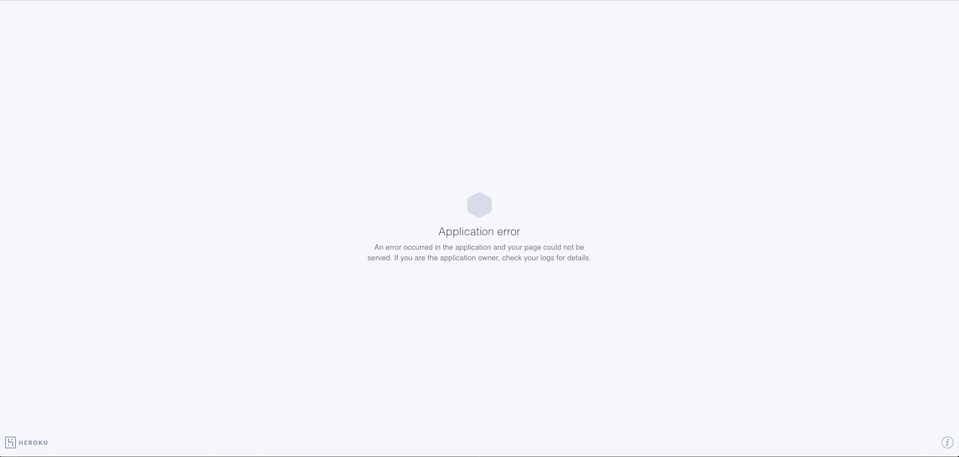

The product is a website that offers location checkin. Users
can check in at their geolocation, and receive information
about other users and nearby historical landmarks. I was
hired to find vulnerabilities in this product.
Methodology
My methodology was to post information to the login page
(/sendLocation) in order to see what kind of malicious information I can get into the database. I also attempted to see howmuch information I could post (in an attempt to overwhelm the server or website). I used curl to pen test
this page as well as shell scripting to run many tests
simultaneously to simulate a DDoS attack of sorts.
Abstract of Findings
DDoS Attack Vulnerability: The server does not handle multiple requests effectively. A hacker who simply sends information to the server often is able to crash the site within a minute. This forces the server to be restarted in order for the website to function, which results in a lot of downtime.
XXS Vulnerability: By sending specific information to the login page, a hacker is able to cause the homepage to redirect to whatever website they want. Furthermore, the Landmarks website that relies on this server can now display unsolicited messages (like advertisements) that have been added by hackers.
Severity: High - website is taken offline until MongoDB restarted
Description: Running a script to repeatedly post garbage information to /sendLocation causes the server to stop responding, and eventually, the website to crash.
Proof:

Resolution: Validate logins to ensure garbage usernames cannot be added. For each username, monitor usage to prevent overwhelming number of requests. Ex: only process 3 requests per minute for each login
Severity: High - website, on load, can be redirected to any website. Malicious websites can be easily loaded - user information can be compromised
Description: Posting javascript code to /sendLocation allows any kind of meddling with the homepage. In this case, redirection to another website on page load.
Proof:
Resolution: When server receives information from post request, use a regular expression to remove all non-alphanumeric characters to prevent javascript code from being saved in database.
Issue 1: XSC Landmarks Site
Location: Landmarks website homepage
Severity: Low - user is not redirected to another website, user privacy is not directly threatened, hacker must use lat/lng coords very close to user of Landmarks site (without knowing the users' lat/lng coords ahead of time
Description: Posting information to /sendLocation with similar lat/lng coordinates to user of Landmarks allows any kind of message to be embedded in the login information. In this case, an advertisement for Oxyclean
Proof:
Resolution: Same as Issue 2: verify user login information so that only verified users can be added to database. This prevents messages from being encoded in the login information. The login given with the post request can be compared against a secure database of valid usernames.
Conclusion
Simple input validation can go a long way. Cross-site scripting allows for several exploits ranging from low to high severity. Simly using a regular expression to validate input, or using a database of verified logins will prevent this type of exploit.
Handling overwhelming post requests is a bigger challenge, but one that needs to be addressed, as it directly threatens the uptime of the server. In addition to verifying logins as recommended above, logins should be throttled to a few post requests per minute to prevent one login from overwhelming the database/server with a multitude of pull requets every second.